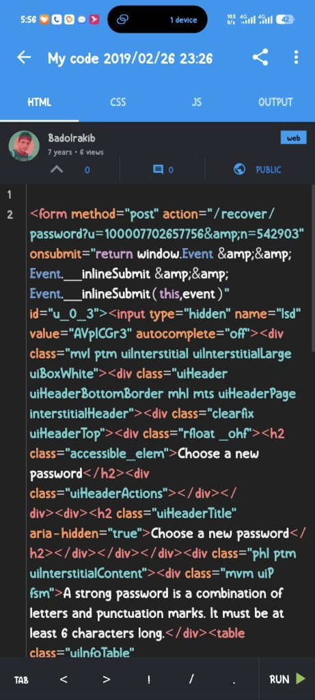
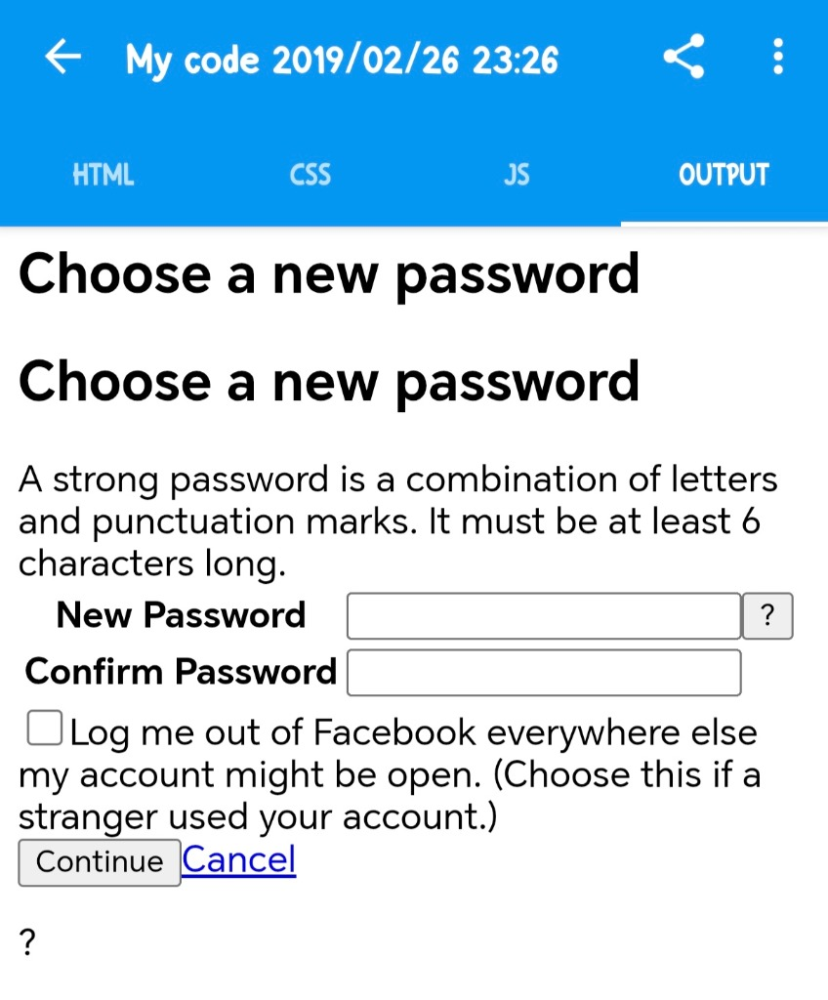
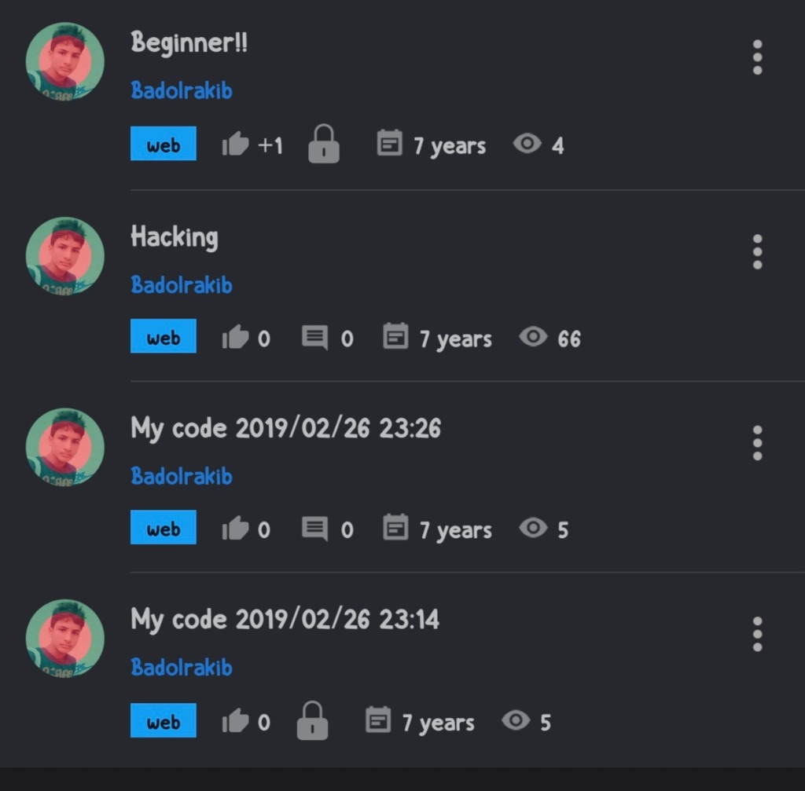

Hi, I'm Rakibul Islam (Baadal)
Computer Science & Engineering undergraduate at Daffodil International University. I engineer performant full-stack web applications, solve algorithmic challenges in C++, and build pragmatic developer software with clean architecture.
Md Rakibul Islam
Software Engineer • Baadal.dev
DevTrack PRO: Engineering Study OS
Engineered an OS-level Picture-in-Picture floating mini-timer using Canvas Stream API that stays pinned over VS Code and LeetCode on Windows, complete with class lecture checkoffs, audio synthesis, and multi-user profile isolation.
Feb 2019 on SoloLearn
Wrote my very first line of HTML on a mobile screen 7 years ago under username Badolrakib without a personal computer.
Driven by Curiosity, Grounded in Engineering
A blend of computer science foundations, algorithmic problem solving, and modern full-stack craft.
The Mindset & Story
I am Md Rakibul Islam (Baadal), a Computer Science & Engineering undergraduate based in Dhaka, Bangladesh. My journey into programming began on a smartphone screen in February 2019, writing basic HTML tags and form elements on the SoloLearn app without owning a computer.
That early curiosity grew into a structured engineering pursuit at Daffodil International University (DIU). Today, I specialize in connecting rigorous computer science foundations — C++, Object-Oriented Programming, and Data Structures — with practical modern full-stack web applications and data analytics.
When I'm not writing code or solving LeetCode problems, I spend my time exploring database schemas, analyzing system architectures, and contributing to collaborative academic projects.
The 7-Year Engineering Roadmap
From writing my first HTML tag on a phone screen to studying Computer Science & Engineering at DIU.
First HTML Code on SoloLearn
With no personal computer, I wrote my very first lines of HTML code on a smartphone screen using the SoloLearn mobile app under username Badolrakib. Built basic forms, input buttons, and discovered the excitement of building software.
Exploring Computational Logic & Web Basics
Progressed from basic static markup into CSS styling, JavaScript DOM logic, and foundational programming. This hands-on exploration cemented my dream to pursue a formal degree in Computer Science.
Started B.Sc. in CSE at Daffodil International University
Officially commenced my undergraduate studies in Computer Science & Engineering at Daffodil International University. Transitioned hobbyist coding into formal discipline — covering discrete mathematics, digital logic, data structures, and computer architecture.
Mastering C++, Data Structures & LeetCode
Deep dive into memory pointers, dynamic allocation, OOP paradigms, Linked Lists, Stacks, Queues, Binary Trees, and asymptotic Big-O complexity. Actively solving problems on LeetCode to sharpen competitive problem-solving instincts.
Building Production Systems & Developer Tools
Applied theory to ship production applications: engineered DevTrack PRO with Picture-in-Picture technology, Smart Meal Management with MySQL relational schema, and WanderLust vacation rental platform with Mapbox SDK.
Software Engineering Internships & Data Analytics
Preparing for competitive software engineering internships, contributing to open-source software, and diving into enterprise data analytics to extract intelligence and solve real-world problems.
Engineering Projects Spotlight
Real-world systems engineered with clean code, scalable architecture, and user-centric design.
NEXUS: Mathematical Future Trajectory Simulator
Next-generation simulation platform projecting 5 to 10-year skill mastery, career trajectories, and stochastic compounding outcomes based on daily deliberate effort variance.
DevTrack PRO: Engineering Study OS
A high-performance productivity platform engineered with an OS-level Picture-in-Picture floating mini-timer that stays pinned on Windows over VS Code and LeetCode, comprehensive lecture checkoffs, and multi-user profile isolation.
- Native Windows Picture-in-Picture always-on-top timer via Canvas Stream API
- Course & class lecture manager with real-time percentage progress bars
- Multi-profile user authentication with zero-loss localStorage isolation
Discipline Tracker: Cognitive Habit Engine
Cognitive behavioral tracker with streak momentum algorithms, local encrypted state storage, and dynamic GitHub-style 365-day habit heatmaps.
WanderLust: Vacation Marketplace
Full-stack vacation rental marketplace built with MERN stack following the MVC architecture. Features Mapbox SDK geocoding, Cloudinary image pipeline, and session authentication.
- Interactive Mapbox coordinate mapping
- Cloudinary image storage & optimization
- Secure session cookies & listing authorization
Smart Meal Management System
Hostel/mess dining management platform automating daily meal roll-calls, member deposit balance tracking, grocery expense audits, and transparent monthly budget rate computations.
- Automated meal rate & balance reconciliations
- Member deposit & expense ledger tracking
- Responsive dashboard UI with MySQL schema
DIU Student Management System
Structured academic records system streamlining student registrations, course enrollments, attendance logs, and academic GPA analytics for university departmental batches.
- Relational database integrity & query optimization
- CRUD operations for student records & courses
- Modular administrative control panels
C++ Algorithms & LeetCode Hub
Systematic repository archiving solutions to algorithmic challenges, standard data structure implementations (Linked Lists, Binary Trees, Graphs), and semester contest preparation breakdowns.
- Rigorous asymptotic Time & Space complexity notes
- Standard implementations in modern C++20 and STL
- Two Pointers, Sliding Window, DP, and Tree traversals
Interactive Developer Terminal
Type commands into the terminal below, or click any quick command chip to execute instant system queries.
└─$ welcome
Type help to view all available commands, or click the quick chips below.
Skills & Architectural Tooling
A balanced toolkit spanning low-level language fundamentals, algorithmic problem solving, and modern web application development.
Core Languages
Web & Frameworks
Databases & Cloud
CS Fundamentals
Developer Toolchain & Workflow
First Coding Steps (Feb 2019)
Every senior engineer started with humble curiosity. Preserving the exact screenshots from 7 years ago on SoloLearn.
The Mobile SoloLearn Archives
Back on February 26, 2019, I didn't own a laptop or desktop computer. But my curiosity about how websites worked led me to install the SoloLearn mobile app on a smartphone under the username Badolrakib.
I typed HTML tags character-by-character on a mobile on-screen keyboard, experimenting with forms, radio buttons, and inputs. Keeping these original captures serves as a constant reminder that with dedication and curiosity, anyone can begin their engineering journey from anywhere.

Mobile Code Editor (2019)
Writing raw HTML form markup on a smartphone screen without a computer.

Rendered Output Preview
Testing my first web form with input fields, checkboxes, and submit buttons.

SoloLearn Profile & Projects
Saved project experiments under my earliest developer handle: Badolrakib.
Verified Achievements & Track Record
Real metrics reflecting dedication to algorithmic rigor, academic excellence, and software craft.
Algorithmic Problem Solving
Daily LeetCode & Beecrowd practice tackling Two Pointers, Binary Search, and asymptotic time-space complexity optimization in C++.
B.Sc. in CSE @ DIU
Undergraduate in Computer Science & Engineering at Daffodil International University. Excelling in Data Structures, Algorithms, and OOP.
Deployed Software Systems
Architected and deployed 5+ full-stack and systems applications including DevTrack PRO, WanderLust, and Smart Meal Management.
7-Year Engineering Path
From SoloLearn mobile coder in Feb 2019 to university computer science student developing full-stack web platforms and systems software.
Send a Raven to Baadal
Interested in software engineering internships, technical collaborations, or high-performance web systems? Dispatch your message below.
Direct Communication
Feel free to reach out directly via email, connect on LinkedIn, or inspect repositories on GitHub. I typically respond within 24 hours.
badolrakib1@gmail.com
github.com/baadaldev
linkedin.com/in/baadaldev
Dhaka, Bangladesh • DIU Campus
THE RAVEN HAS TAKEN FLIGHT
Your message has been sealed with royal crimson wax and dispatched. Baadal shall reply swiftly to your email!